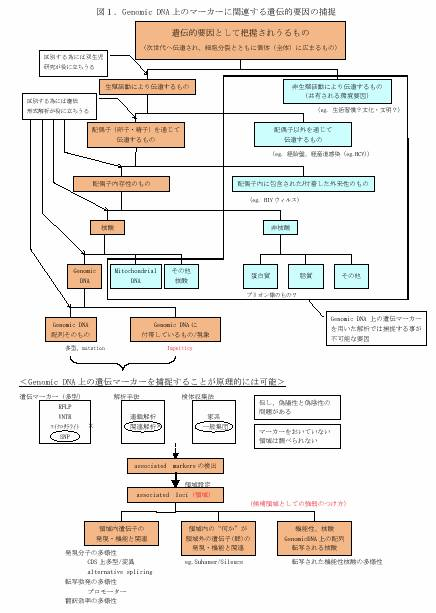

1-5 網羅的遺伝的要因探索の落とし穴
ゲノムワイドに疾患関連遺伝子を解析していると、ついつい、全ての遺伝的要因について網羅的に解析を行っているかのような錯覚に陥る危険性があります。ゲノムワイドSNPsを用いたケース・コントロール関連解析の手法にも、当然のことながら様々な落とし穴があります。この項では、それらについて体系的に再確認することを目的としています。
遺伝性があるとしてとらえられ得る要因と、genomic DNA上の遺伝マーカーを用いた解析で補足される遺伝的要因(genomic DNA上の関連遺伝マーカーの捕捉)

カウンタ